بنى سترينغ المرتبطة بزمر لي غير محددة الإشارة
2 Department of Mathematics, University of Pittsburgh, Pittsburgh, PA 15260, USA
May 1, 2026
Abstract
أدت بنى سترينغ دورا مهما في الطوبولوجيا الجبرية، عبر الأجناس الإهليلجية والكوهومولوجيا الإهليلجية، وفي الهندسة التفاضلية، عبر دراسة البنى الهندسية العليا، وفي الفيزياء، عبر دوال التقسيم. نوسع وصف بنى سترينغ من الأغلفة المتصلة للزمرة المتعامدة ذات الإشارة المحددة O(n) إلى الزمرة المتعامدة ذات الإشارة غير المحددة O(p,q)، أي من السياق الريماني إلى السياق شبه الريماني. ويتطلب ذلك العمل عند المستوى غير المستقر، مما يجعل النقاش أدق من الحالة المستقرة. وتوجد إنشاءات مشابهة، لكنها أبسط بكثير، من أجل زمر لي غير المتراصة الأخرى مثل الزمرة الوحدوية U(p,q) والزمرة السيمبلكتية Sp(p,q). ويوفر هذا التوسيع نقطة انطلاق لعدد وافر من الإنشاءات في الهندسة (العليا) ولتطبيقات في الفيزياء.
Contents
2 برج بوستنيكوف وبرج وايتهيد ومتغيرات
2.1 برج بوستنيكوف
2.2 برج وايتهيد
2.3 منظور بديل
2.4 جوانب حسابية
2.5 حالة خاصة: الأغلفة الأعلى اتصالا لفضاءات التصنيف والعوائق
3 تطبيقات
3.1 الزمر المتعامدة الخاصة SO(n) وSO(p,q)
3.2 زمر سبين غير محددة الإشارة
3.3 زمر سترينغ غير محددة الإشارة
3.4 بنية سترينغ المرتبطة بالزمر الوحدوية والسيمبلكتية غير محددة الإشارة
3.5 الصلة بالبنى الملتوية
1 مقدمة
تؤدي زمر لي دورا مهما في توصيف التناظرات. واختيار زمرة لي الملائمة يتيح تعريف بنى معينة تعريفا لا لبس فيه. فمثلا، تتطلب البنية الريمانية على متشعب ما أن تكون للحزمة الرئيسية للأطر الموافقة للحزمة المماسة زمرة متعامدة زمرة بنية. وللحديث عن التوجيهات يحتاج المرء إلى الزمرة المتعامدة الخاصة، ولمناقشة السبينورات على نحو صحيح يحتاج إلى الرفع إلى الغطاء المزدوج، وهو زمرة سبين. وكل هذه البنى ظواهر في درجات منخفضة يمكن ترميزها بصورة موحدة وموجزة عبر برج وايتهيد للزمرة المتعامدة (انظر [30] [31] [29]).
في الطوبولوجيا الجبرية، يدرس المرء عادة برج وايتهيد للزمرة المتعامدة المستقرة (انظر [30]). وعلى وجه الخصوص، يؤدي قتل زمرة الهوموتوبي الثالثة إلى زمرة سترينغ المستقرة (انظر [34] [35]). وهناك إنشاءات وتطبيقات كثيرة مرتبطة ببنى سترينغ وبزمرة سترينغ في مجالات مختلفة من الرياضيات والفيزياء. وما يلي عينة غير مكتملة بالضرورة. في الطوبولوجيا الجبرية تؤدي بنى سترينغ دور التوجيه للكوهومولوجيا الإهليلجية [1] [34] [35]. وفي الهندسة التفاضلية تؤدي اتصالات سترينغ دورا في الوصف الهندسي للحزم التي تكون زمرة سترينغ زمرة بنية لها [31] [26] [39] [6] [7]. وفي الفيزياء الرياضية، تنشأ شروط وجود بنى سترينغ بوصفها شروطا لإلغاء الشذوذ [16] [30] [31].
تهدف هذه الورقة إلى فتح زاوية جديدة في الموضوع. سنكون معنيين بحالة الزمرة المتعامدة غير محددة الإشارة O(p,q)، التي يمكن من وجهة نظر هندسية أن ينظر إليها بوصفها زمرة بنية للحزمة المماسة لمتشعب شبه ريماني بعده n = p + q. وكما في الحالة الريمانية، يهتم المرء بالنظر في متشعبات شبه ريمانية موجهة ثم سبينية
ومن أجل ذلك يحتاج إلى رفع O(p,q) إلى الزمرتين المناسبتين SO(p,q) وSpin(p,q)، على التوالي. ينطوي هذا على كثير من الدقائق، وبخلاف الحالة الريمانية، فليس واضحا هنا سلفا أي زمر هوموتوبية (جزئية) ينبغي قتلها للوصول إلى زمرة الغطاء المناسبة. ونخصص بعض الوقت لمناقشة ذلك قبل الشروع في النظر في زمر سترينغ غير محددة الإشارة الموافقة. وفي الهندسة والفيزياء تكون الحالات p = 1,2 ذات أهمية خاصة، إذ تقابل زمرة لورنتز وزمرة الامتثال، على التوالي. ونتناول جميع الحالات، وغالبا ما يوجد انقسام طبيعي إلى الحالات p = 1 وp = 2 وp ≥3.
ومن المسائل الدقيقة الأخرى في نقاشنا أننا نحتاج إلى العمل في المجال غير المستقر من أجل الزمر المتعامدة، أي مع O(n) من أجل n منته، أي من دون أخذ نهاية للرتبة كما هو معتاد في الأدبيات. ففي الحالة الريمانية يستبدل برج وايتهيد (قارن [30]) ببرج يتضمن n منتهية
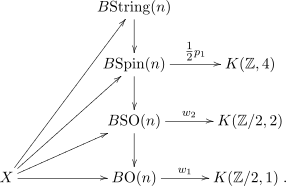
حيث إن w1 ∈H1(BO(n);ℤ∕2) وw2 ∈H2(BSO(n);ℤ∕2) هما صنفا شتيفل-ويتني الشاملان الأول والثاني، في حين أن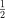
p1 ∈H4(BSpin(n);ℤ) هو صنف سبين المميز الأول الشامل.يعطي هذا إنشاء هوموتوبيا لغلاف 8-متصل (BO(n))⟨8⟩لفضاء تصنيف O(n). ووجود فضاء تصنيف يشير إلى وجود زمرة. وفي الواقع، يبني ستولتز [34] زمرة طوبولوجية بوصفها امتدادا
حيث إن P →Spin(n) هي حزمة PU(ℋ)-رئيسية مع ℋفضاء هلبرت قابلا للفصل وغير منتهي البعد بحيث يكون B هو الغلاف 8-المتصل لـ BO(n). وهذه الزمرة الطوبولوجية مكافئة هوموتوبيا لزمرة سترينغ String (n)، المعرفة عبر التليف K(ℤ,2) →String(n) →Spin(n)، بحيث تكون لـString(n) بنية زمرة. ولهذا أيضا بنية تفاضلية [23]. ومنذ ذلك الحين ظهرت نماذج كثيرة لزمرة سترينغ، ولكل منها سمات مرغوبة مختلفة (انظر مثلا ملحق [7] لسبعة نماذج من هذا القبيل). فعلى سبيل المثال، في أحد النماذج [23]، تبنى String(n) كامتداد كما في المعادلة (1.1) لزمر لي، بحيث تكون لـ بنية زمرة فريشيه-لي محددة تحديدا وحيدا حتى التشاكل. إن وجود مثل هذه البنى يتيح لنا الحديث عن حزم String(n)-رئيسية وعن متشعبات سترينغ، مع اعتبار String(n) زمرة بنية.
تتطلب دراسة زمرة سبين وفضاء تصنيفها من وجهة نظر الكوهومولوجيا فهم المولد الأول، أي المولد في الدرجة الثالثة لكوهومولوجيا زمرة سبين أو المولد في الدرجة الرابعة لفضاء التصنيف الموافق (انظر [40] [7] من أجل علاقات مثيرة بينهما). ومن المعروف من [36] أن حلقة كوهومولوجيا BSpin في الحالة المستقرة يولدها أصناف سبين المميزة، والمولد في الدرجة الرابعة منها هو p1. غير أننا معنيون بالحالة غير المستقرة، وقد بين ماكلوغلين [21] بالفعل أن p1 هو أيضا مولد الكوهومولوجيا H4(BSpin(n);ℤ). ومن ثم يكون رفع زمرة البنية من Spin(n) إلى String(n) لحزمة فوق متشعب X ممكنا عندما ينعدم العائق p1(X). وسنهتم بتعميم هذه النتيجة إلى حالة BSpin(p,q).
تكتسب بنى سترينغ أهميتها من وجهة النظر الهندسية بسبب العلاقة بين الهندسة الريمانية لمتشعب ما والأصناف المميزة المرتبطة ببنى سترينغ على ذلك المتشعب. تقول حدسية ستولتز-هون ما يلي: لتكن X متشعب سترينغ أملس مغلقا بعده 4k. إذا قبلت X متريا ريمانياً ذا انحناء ريتشي موجب، فإن جنس ويتن ϕW (X) ينعدم.
هوموتوبيا، تعادل بنى سترينغ وجود توجيه سترينغ، وهو، بعلاقته بالأشكال المعيارية، يعطي توجيها موافقا لطيف الأشكال المعيارية الطوبولوجية (tmf)، MString →tmf [1]. وحدسيا، يبنى جنس ويتن كمؤشر لمؤثر ديراك على فضاء الحلقات [44]. وهذا هو نظير سترينغ للمبرهنة على انعدام جنس Â بواسطة ليشنروفيتش [19] لمتشعبات سبين: لتكن X متشعب سبين أملس مغلقا بعده 2k. إذا قبلت X اتصالا أفينيا ريمانياً بانحناء ريماني غير سالب وغير منعدم تطابقيا، فإن جنس Â ينعدم.
خريطة أتيه-بوت-شابيرو MSpin →KO تبنى باستعمال تمثيلات زمر سبين، وتعتمد على معرفة أنه من أجل فضاء X، تمثل عناصر KO0(X) بحزم متجهية فوق X. وهي تعطي تشاكل توم في نظرية KO للحزم المتجهية السبين، وتمثل تعبيرا طوبولوجيا عن مؤشر مؤثر ديراك. ونأمل أن يكون بالإمكان استكشاف أسئلة مشابهة في السياق شبه الريماني.
تنظم هذه الورقة على النحو الآتي. نبدأ بإطار أعم للمسألة نأمل أن يفسر بعض الإنشاءات الهوموتوبية التي نصادفها هنا وكذلك في الأدبيات السابقة. في القسم 2.1 و2.2، نصف برج بوستنيكوف وبرج وايتهيد لفضاء ما بطريقة ملائمة للتطبيقات. ثم في القسم 2.3 نقدم وجهة نظر بديلة في برج وايتهيد بقصد الإيضاح. وبما أن رفوع زمر لي غير محددة الإشارة ستتحدد بزمرها الجزئية المتراصة العظمى، وهي جداءات، فإننا نناقش في القسم 2.4 شروطا مفيدة على سلوك كوهومولوجيا الجداءات. وهذا النقاش لازم لأننا نعمل بالكوهومولوجيا ذات المعاملات الصحيحة. ويطبق ذلك في القسم 2.5 على فضاءات التصنيف، حيث نحدد العوائق والمواضع التي تصبح فيها التليفات حزما ليفية. نبدأ بالتطبيقات في القسم 3. أولا، وللتأكد من أننا على أرضية ثابتة، نناقش الزمر المتعامدة غير محددة الإشارة في القسم 3.1، مع إبراز زمرها الهوموتوبية غير المستقرة. وتعالج مسألة دقيقة تتعلق بعدم انعدام الزمرة الأساسية لزمر سبين الموافقة في القسم 3.2. ويستخدم ذلك في القسم 3.3 لتعريف زمر سترينغ غير محددة الإشارة، حيث نحدد العوائق صراحة بدراسة مولدات فضاء تصنيف BSpin(n) في الحالة غير المستقرة. ثم نبين في القسم 3.4 كيف تمتد التعريفات والإنشاءات إلى حالة U(p,q) وSp(p,q)، حيث تغيب المسائل الدقيقة المتعلقة بالاستقرار. وأخيرا، في القسم 3.5 نصف الصلات بالبنى الملتوية، ونختم بإبراز أعمال مستقبلية نأمل القيام بها.
2 برج بوستنيكوف وبرج وايتهيد ومتغيرات
في هذا القسم نقدم معالجة دقيقة للأبراج الناشئة عند القتل المشارك لزمر الهوموتوبي في زمر لي. والفكرة هي أن أبراج بوستنيكوف تظهر عند قتل زمر الهوموتوبي فوق درجة معينة، في حين تظهر أبراج وايتهيد عند قتل زمر الهوموتوبي دون درجة معينة، ومن هنا تأتي عبارة القتل المشارك. وسنقدم أيضا برجا بديلا للأغلفة الأعلى اتصالا، ونبين أنه مكافئ للأخير. ونعتقد أن مثل هذه المعالجة، وإن كانت معروفة قطعا للخبراء، تبدو غائبة عن الأدبيات القائمة بحسب علمنا. ونأمل أن تفيد هذه المعالجة التقنية القارئ وأن تجعل الورقة مكتفية بذاتها. وقد يرغب القراء غير المهتمين بهذه التفاصيل في تجاوز هذا القسم.
2.1 برج بوستنيكوف
نبدأ باستذكار برج بوستنيكوف (انظر [13] [12]). وسنتخذ هذا نقطة انطلاق للربط ببرج وايتهيد.
مبرهنة 2.1 (انظر [13] [12]) ليكن X فضاء بسيطا متصلا مساريا مع خريطة α : X →X1، حيث إن X1 هو فضاء أيلنبرغ-ماك لين K(π1(X),1)، وتستحث تشاكلا على الزمر الأساسية π1(X) →π1(X1). عندئذ توجد فضاءات Xn مع خرائط αn : X →Xn تستحث تشاكلات على زمر الهوموتوبي πk(X) →πk(Xn) من أجل k ≤n وπk(Xn) = 0 من أجل k > n، مع تليفات pn+1 : Xn+1 →Xn بحيث αn = pn+1 ∘αn+1.
بافتراض أن مثل هذا αn : X →Xn معطى، سيعرف الفضاء Xn+1 بوصفه الليف الهوموتوبي لخريطة معينة kn+2 : Xn →K(πn+1(X),n+ 2) تكافئ صنف الكوهومولوجيا الموافق في Hn+2(Xn,πn+1(X)) بحيث يكون الصنف المستحث αn∗kn+2 ∈Hn+2(X,πn+1(X)) تافها. وبشمولية الليف الهوموتوبي Xn+1 يحصل المرء عندئذ على الخريطة المطلوبة αn+1 : X →Xn+1. تجمع هذه الخرائط في المخطط الآتي المسمى برج بوستنيكوف لـX:
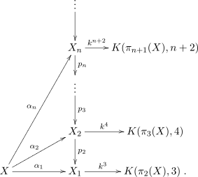
ويمكن للمرء أن يرى كيف تختار مثل هذه الخريطة kn+2 : Xn →K(πn+1(X),n + 2) وكيف يحصل على Xn+1 بوصفه الليف الهوموتوبي صراحة كما يلي. ليكن j : C(αn) →K(πn+1(X),n + 2) الإلحاق الاستقرائي للخلايا بالليف المشارك C(αn) لمطابقة زمرة الهوموتوبي للفضاء K(πn+1(X),n + 2) انطلاقا من التعريف πn+2(C(αn))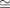
πn+1(X) ومن كون C(αn) (n + 1)-متصلا. ومن ناحية أخرى، لدينا الاحتواء Xn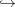
C(αn) ونأخذ المركب kn+2 : Xn →K(πn+1(X),n + 2). ومن احتواء المخروط C(X) في الليف المشارك C(αn)، يكون χx(t) := j(x,1 −t) من أجل (x,1 −t) ∈C(X) في فضاء المسارات PK(πn+1(X),n + 2). وهذا يجعل المستطيل الخارجي جزءا من مخطط السحب الخلفي الآتي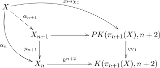
تبادليا، بحيث يكون لدينا الليف الهوموتوبي Xn+1. وهنا يدل ev1 على التقييم عند النقطة 1 من الفترة في فضاء المسارات. لاحظ أن PK(πn+1(X),n + 2) مكافئ هوموتوبيا لفضاء نقطي، ولذلك فإن تبادلية المخطط تقتضي أن صنف الكوهومولوجيا αn∗kn+2 ∈Hn+2(X;πn+1(X)) تافه. لذلك نحصل على الخريطة αn+1 التي تحقق αn = pn+1 ∘αn+1 وتستحث تشاكلا πk(X) →πk(Xn+1) من أجل k ≤n+ 1 وتجعل Xn+1 ذات زمرة هوموتوبي kthk>n+2.برج بوستنيكوفX.
2.2 برج وايتهيد
ننظر بعد ذلك في برج وايتهيد، وهو بمعنى ما مزدوج لبرج بوستنيكوف [42] [43]. لاحظ أن برج بوستنيكوف يقرب زمر الهوموتوبي للفضاء X “من الأسفل” بمعنى أنه يقبل تشاكلا لزمر الهوموتوبي الدنيا مع قتل زمر الهوموتوبي العليا. ومن ثم يمكن البحث عن العملية المزدوجة لتقدير زمر الهوموتوبي للفضاء X “من الأعلى”، بمعنى أن زمر الهوموتوبي الدنيا تقتل بينما تكون زمر الهوموتوبي العليا مماثلة لتلك الخاصة بـX.
مبرهنة 2.2 (انظر [43]) ليكن X فضاء (مساريا) متصلا له برج بوستنيكوف. عندئذ توجد فضاءات (مسارية) متصلة X⟨n⟩ بحيث πk(X⟨n⟩) = 0 من أجل k ≤n وخرائط
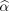
n : X⟨n⟩→X تستحث تشاكلات πk(X⟨n⟩) → πk(X) من أجل k > n. وعلاوة على ذلك، يوجد تليف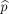
n+1 : X⟨n + 1⟩→X⟨n⟩لكل n بحيث n+1 = n∘ n+1 ويكون ليفه فضاء الحلقات المرتكز ΩX⟨n⟩.من برج بوستنيكوف للفضاء X، لدينا فضاءات Xn وخرائط αn : X →Xn. وبأخذ الليف الهوموتوبي X⟨n⟩لـαn، نحصل على تليف n : X⟨n⟩→X يستحث تشاكلات πk(X⟨n⟩) →πk(X) من أجل k > n ويجعل πk(X⟨n⟩) = 0 من أجل k ≤n. وبما أن X⟨n + 1⟩→X يتحلل عبر X⟨n⟩طبيعيا كما في المخطط
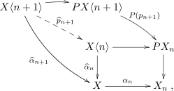
نحصل على خريطة n+1 : X⟨n + 1⟩→X⟨n⟩، يمكن جعلها تليفا، حتى التكافؤ الهوموتوبي، بحيث n+1 = n ∘ n+1. وتبين المتتالية الدقيقة الطويلة المستحثة من التليف n+1 أن الليف مكافئ هوموتوبيا لفضاء أيلنبرغ-ماك لين K(πn+1(X),n). وبرج التليفات المحصل عليه بهذه الطريقة هو نسخة مزدوجة من برج بوستنيكوف تسمى برج وايتهيد [42] [43]:
2.3 منظور بديل
يمكن اعتبار كل تليف n+1 : X⟨n + 1⟩→X⟨n⟩في برج وايتهيد غلافا (n + 1)-متصلا لـX⟨n⟩، ويمكننا طرح سؤال “الرفع”، أي تحت أي ظرف يمكن رفع خريطة M →X⟨n⟩إلى M →X⟨n + 1⟩كما في المخطط التبادلي
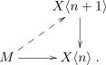
وللإجابة عن هذا السؤال نحتاج إلى الخاصية المهمة الآتية لمتتالية الفضاءات الظاهرة في برج وايتهيد.قضية 2.3 ليكن X فضاء متصلا. عندئذ توجد فضاءات X⟨n⟩، حيث X⟨1⟩ := X، مع تليفات
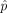
n+1 : X⟨n + 1⟩→X⟨n⟩ذات ليف K(πn(X),n −1) بحيث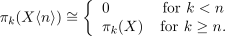
ملاحظة 1 تبنى هذه الفضاءات X⟨n + 1⟩ بوصفها أليافا هوموتوبية لصنف كوهومولوجيا λn ∈ Hn(X⟨n⟩;πn(X)) يستحث تشاكلا πn(X⟨n⟩)
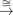
π n(X)، وترفع خريطة f : M → X⟨n⟩ إلى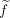
: M → X⟨n + 1⟩إذا كان صنف الكوهومولوجيا المستحث f∗λn ∈Hn(M;πn(X)) تافها.لذلك لدينا المخطط الآتي الذي يمكن أن يسمى برج الأغلفة الأعلى اتصالا
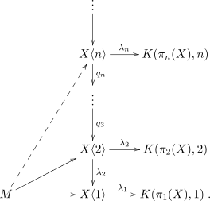
والإنشاء تطبيق استقرائي للعملية في اللمة الآتية.لمّة 2.4 (قتل زمرة الهوموتوبي nth) ليكن X فضاء بسيط الاتصال، وليكن Y فضاء (n−1)-متصلا يستحث صنف كوهومولوجياه λn ∈Hn(Y ;πn(X)) تشاكلا πn(Y ) →πn(X). عندئذ يحقق الليف الهوموتوبي
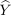
لـλn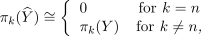
مع تليف q : →Y . وترفع خريطة f : M →Y إلى : M → بالنسبة إلى التليف q عندما يكون صنف الكوهومولوجيا المستحث f∗λn ∈Hn(M;πn(X)) تافها.
البرهان. نود النظر في الرفع
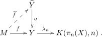
وتتبع النتيجة عندئذ من النظر في مخطط السحب الخلفي الآتيوفي متتاليته الدقيقة الطويلة لزمر الهوموتوبي، ومن حقيقة أن فضاء المسارات PK(πn(X),n) قابل
للانكماش. وهنا تكون الخريطة ev1 هي خريطة التقييم عند النقطة 1 في المسار. □
ملاحظة 2 (i) إحدى طرق معرفة أن تليفا معطى K(πn(X),n −1) →X⟨n + 1⟩→X⟨n⟩ يندرج في برج الأغلفة الأعلى اتصالا هي التحقق من أن خريطة f : M →X⟨n⟩يمكن رفعها إلى خريطة : M →X⟨n+1⟩ إذا وفقط إذا انعدم صنف الكوهومولوجيا f∗λn ∈Hn(M;πn(X)) المستحث بواسطة λn الذي استحث تشاكل زمرة الهوموتوبي n
th.
(ii) من الملائم إعادة صياغة التعريف بطريقة تظهر صراحة مسألة العائق التي تعطي الرفع من X⟨n −1⟩ إلى X⟨n⟩. وفي الواقع، فإن الإنشاءين، أي برج وايتهيد وبرج الأغلفة الأعلى اتصالا، متكافئان بواسطة المخطط الهوموتوبي التبادلي:
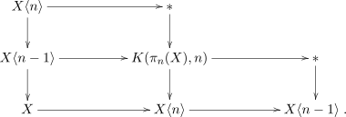
2.4 جوانب حسابية
ننتقل الآن إلى جوانب حسابية مفيدة للإنشاءات أعلاه. وسيكون ذلك مفيدا أيضا عند النظر في زمر لي غير محددة الإشارة في القسم 3. نود تحديد أي الأصناف في Hn(Y ;πn(X))، المحققة بوصفها أصناف هوموتوبية لخرائط Y →K(πn(X),n)، تستحث تشاكلات πn(Y )πn(X). ونفعل ذلك بربط الحد الجمعي Hom (Hn(Y,ℤ),πn(X)) في Hn(Y ;πn(X)) عبر خريطة هوريفيتس πn(Y ) →Hn(Y,ℤ). وعموما يحتاج المرء إلى افتراضات قوية على Y لكي يكون ذلك ممكنا، إذ قد تكون خريطة هوريفيتس صفرية. غير أنه تحت افتراض أن Y هو (n −1)-متصل، نحصل على تشاكل Hn(Y,πn(X))Hom(πn(Y ),πn(X)).
افترض أن زمرة الهوموتوبي nth لـY على الصورة A×B لبعض الزمر الأبيلية A وB بحيث إن كلا من Hn(Y ;A) وHn(Y ;B) مولد بحرية بمولد واحد α وβ، على التوالي. وسنشير بـ(α,0) و(0,β) إلى الأصناف في Hn(Y,A ×B) المحصلة من الأصناف الموافقة في Hn(Y ;A) وHn(Y ;B) عبر التشاكل القانوني A →A×B وB →A×B، على التوالي. وعندئذ يستحث α وβ تشاكلي زمر πn(X) →A وπn(X) →B، بحيث لا يستطيع أي من (α,0) أو (0,β) في Hn(Y ;A ×B) أن يستحث تشاكلا πn(Y )
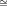
→A ×B. غير أن الصنف في Hn(Y ;A) ×Hn(Y ;B) الذي يستحث التشاكل موجود، وهو من الصورة (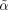
,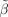
) حيث = aα ∈Hn(Y ;A) و = bβ ∈Hn(Y ;B) لبعض الأعداد الصحيحة غير الصفرية a وb. وعلى أي حال، بأخذ Y (n −1)-متصلا، يكون لدينا تشاكل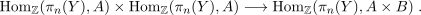
ومن ناحية أخرى، ومع افتراض πn(X)πn(Y ) أيضا، إذا كان Y مكافئا هوموتوبيا لفضاء الجداء Y ′×Y ′′و
فإن لدينا التفكيك
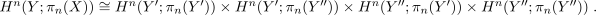
وهذا هو الحال فورا لفضاءاتنا، لأنها مفترضة (n −1)-متصلة.وبافتراض إضافي أن الزمرتين الأبيليتين Hn(Y ′;πn(Y ′)) وHn(Y ′′;πn(Y ′′)) كل منهما دورية ذات مولد صنف واحد α′وα′′، على التوالي، فإن صنف الكوهومولوجيا (α′,α′′) يستحث التشاكل المطلوب πn(Y ′×Y ′′) →πn(Y ′) ×πn(Y ′′). ومن الواضح أن صنف الكوهومولوجيا (α′,α′′) يمثله α′×α′′: Y ′×Y ′′→K(πn(Y ′),n) ×K(πn(Y ′′),n). وهكذا حصلنا على:
قضية 2.5 من أجل فضاء متصل مساريا و(n−1)-متصل Y يملك الليف الهوموتوبي لـλn : Y →K(πn(Y ),n) زمر هوموتوبي مماثلة لتلك الخاصة بـY ما عدا πn() = 0، وفقا للحالات الآتية:
-
λn = α إذا كان α هو المولد الوحيد لـHn(Y,πn(X))، أي لدينا مخطط سحب خلفي هوموتوبي
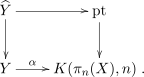
-
λn = (,
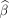
) إذا كان πn(Y )A ×B و Hn(Y ;A) وHn(Y ;B) حرين بمولدين α وβ، على التوالي، حيث إن = aα و = bβ لبعض الأعداد الصحيحة غير الصفرية a وb، على التوالي، أي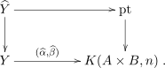
-
λn = α′×α′′وهو مكافئ للخريطة Y ′×Y ′′→K(πn(Y ′),n)×K(πn(Y ′′),n) إذا كان Y ≃Y ′×Y ′′ حيث إن α′,α′′ هي المولدات الوحيدة لـHn(Y ′,πn(Y ′)) وHn(Y ′′,πn(Y ′′)) على التوالي، ولدينا مرة أخرى مخطط السحب الخلفي الهوموتوبي
2.5 حالة خاصة: الأغلفة الأعلى اتصالا لفضاءات التصنيف والعوائق
سنكون معنيين أساسا بالحالة التي تكون فيها فضاءاتنا زمرا طوبولوجية. ليكن G زمرة طوبولوجية (n−1)-متصلة. 1 عندئذ يكون BG فضاء تصنيف لـG بحيث πi(BG) = 0 من أجل i ≤n. وبأخذ الليف الهوموتوبي للخريطة القانونية BG →K(πn+1(BG),n+ 1)، نحصل على فضاء
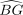
تكون فيه πn+1() تافهة. وعندئذ يحقق فضاء حلقاته Ω πn(Ω) = 0. بوضع := Ω، نحصل على فضاء طوبولوجي هو G مع قتل πn. والنتيجة المباشرة لهذه الملاحظة هي الآتية:لمّة 2.6 مكافئ هوموتوبيا ضعيفا لـB().
لاحظ أن عبارة اللمة يمكن ترقيتها إلى تكافؤ هوموتوبي بشرط أن يؤخذ B() ليكون فضاء التصنيف المعتاد لفضاء A∞ الشبيه بالزمرة .
ننظر الآن في تصنيف الحزم الموافقة. ومن النقاش العام في الأقسام السابقة لدينا النتائج الآتية.
قضية 2.7 افترض وجود حزمة G-رئيسية فوق M تحددها خريطة تصنيف f : M → BG. عندئذ توجد خريطة
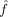
: M →B تعطي حزمة -رئيسية فوق القاعدة نفسها M متوافقة مع الحزمة f بالنسبة إلى الخريطة B →BG إذا كان f∗λn ∈Hn+1(M,πn(G)) تافها لبعض λn ∈Hn+1(BG;πn(G)) الذي يستحث تشاكلا πn(BG) →πn−1(G).ملاحظة 3 (i) الشرط في القضية (2.7) يكافئ القول إن f∗λn يتحلل عبر فضاء نقطي حتى الهوموتوبيا:
(ii) نقول إن العائق f∗λn ينعدم أو يزال بتفكيك تافه بحيث ترفع الحزمة f إلى . ويسمى رفع f إلى أيضا التفكيك التافه للصنف λn.
وفي الواقع، يستحث مخطط السحب الخلفي في المعادلة (2.2) مخطط سحب خلفي آخر يصنف الحزم -الرئيسية فوق X. وبالدلالة على مجموعة أصناف التشاكل للحزم G-الرئيسية فوق X بـBunG(X)، نحصل على مخطط سحب خلفي وبالاستقراء نحصل على برج من الأغلفة المتصلة هو الجانب الأيمن من المخطط:

وبصورة أخص، سنكون معنيين أساسا بالحالة التي يكون فيها G⟨n⟩زمرة طوبولوجية (n −1)-متصلة، وكذلك بفضاء التصنيف BG لبعض زمرة طوبولوجية G، أي X = BG، و غلافه (n −1)-المتصل BG⟨n⟩. نود إيجاد زمرة طوبولوجية (n−2)-متصلة G⟨n−1⟩تشكل جزءا من غلاف (n−2)-متصل G⟨n−1⟩→G بحيث يكون B(G⟨n −1⟩) مكافئا هوموتوبيا لـ(BG)⟨n⟩.
من أجل درجات منخفضة نسبيا 2 n تعرف الأغلفة المتصلة O(k)⟨n⟩بوصفها فضاءات الحلقات المرتكزة لفضاءات التصنيف الموافقة في [31][9][29]. ويتبع من نتائج كان وميلنور أن لكل فضاء حلقات مرتكز نمط هوموتوبي لزمرة طوبولوجية. وفي الفئة الهوموتوبية لمركبات CW المتصلة، يوجد تكافؤ بين فضاءات الحلقات، والزمر الطوبولوجية، وفضاءات H الترابطية (انظر [14, Ch. 4]). عقلانيا، يوجد أساسا ضرب وحيد على الأغلفة المتصلة للزمرة المتعامدة [32, Prop. 3].
لدينا مخطط السحب الخلفي الهوموتوبي
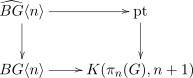
والتليف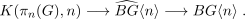
إن امتلاك مخطط سحب خلفي هوموتوبي مثل (2.5) يكافئ القول إن ⟨n⟩هو الليف الهوموتوبي لـ BG⟨n⟩→K(πn(G),n + 1)، ومن ثم يكافئ القول إن ⟨n⟩→BG⟨n⟩→K(πn(G),n + 1) متتالية ألياف هوموتوبية.بعد ذلك، بوضع ⟨n −1⟩= Ω(⟨n⟩) يكون لدينا B(⟨n −1⟩) ≃⟨n⟩، وهذا ⟨n −1⟩يندرج في المخطط
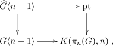
الذي يستحث تليفا ذا ليف K(πn(G),n −1)وبما أن لـK(πn(G),n−1) بنية زمرة، فإن هذا يستحث (2.5) بوصفها حزمة ليفية. وفي الواقع، ستكون هذه حزمة ليفية رئيسية، والنقطة هي أن الليف الهوموتوبي لخريطة إلى فضاء متصل X هو في الحقيقة حزمة ΩX-رئيسية زمرة بنيتها زمرة طوبولوجية فعلية تمثل النمط الهوموتوبي لفضاء الحلقات ΩX.
مثلا، في حالة n = 1، يكون لدينا = Spin(m) معرفا بدلالة جبر كليفورد بوصفه الغطاء المزدوج لـG = SO(m)، m ≥3.
ليكن G زمرة طوبولوجية n-متصلة بحيث n ≥2. إذا كان πn+1(G) = A، فإن هناك نموذجا لفضاء أيلنبرغ-ماك لين K(A,n) ذا بنية زمرة أبيلية طوبولوجية، يشكل جزءا من امتداد لزمر أبيلية طوبولوجية
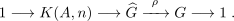
وعلاوة على ذلك،
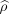
: →G حزمة K(A,n)-رئيسية. ويمكن إثبات ذلك بصورة مشابهة لحالة n = 2 في [34]، باختيار نموذج لـK(A,n) كزمرة أبيلية طوبولوجية، وترك P →G يدل على حزمة K(A,n)-الرئيسية المصنفة بالصنف الأساسي لـHn+1(G,A). ثم نعرف كما في [34] بحيث تكون لدينا متتالية تامة قصيرة من الزمر الطوبولوجية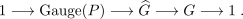
حيث إن Gauge(P) هي زمرة القياس للحزمة P. وبصورة مشابهة لـ[34] يستطيع المرء أن يبين أن تشاكل التقييم القانوني Gauge(P) →K(A,n) هو تكافؤ هوموتوبي. وباختصار، لدينا:
قضية 2.8 إن التليفات في برج وايتهيد (ومن ثم في برج الأغلفة المتصلة أيضا) لزمرة لي هي حزم ليفية رئيسية.
لاحظ أن معالجة مفصلة لبرج وايتهيد في الحالة العقلانية معطاة في [32]، حيث تحدد بنى الزمر أيضا.
3 تطبيقات
3.1 الزمر المتعامدة الخاصة SO(n) وSO(p,q)
نركز الآن على الزمرة المتعامدة وأغلفتها المتصلة. نبدأ بالإشارة المحددة ثم ننتقل تدريجيا إلى الإشارات غير المحددة. وبالبدء بالأولى، لدينا العبارة التي تحدد متى يكون الانتقال في الرتبة غير مؤثر
لاحظ أنه وفقا لكرفير [15] لا يمكن تحسين ذلك عموما، إذ إن π6(SO(7))0، في حين أن π7(SO(7))ℤ. يبين التشاكل الآتي أن الزمرة المتعامدة الخاصة SO(n) لها زمر الهوموتوبي نفسها التي للزمرة المتعامدة O(n) في الدرجات الموجبة
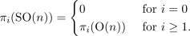
ونسجل أيضا التعريفات الآتية في الدرجات المنخفضة، فهي غالبا مفيدة في الحسابات والتطبيقات: O(1)S0 وSO(2)S1 وSO(3)ℝP3، بينما SO(4) هو الغطاء المزدوج لـSO(3) ×SO(3)، أي SO(4)(S3 ×S3)∕ℤ2. لاحظ أن Spin (4)S3 ×S3.وبجمع كل الملاحظات والنتائج أعلاه نحصل على الجدول الآتي لزمر الهوموتوبي غير المستقرة للزمر المتعامدة منخفضة البعد (انظر مثلا [15]):
| O(1) | O(2) | O(3) | O(4) | O(5) | O(6) | O(7) | O(8) | O(9) | |
| π0 | ℤ∕2 | ℤ∕2 |
ℤ∕2 | ℤ∕2 | ℤ∕2 | ℤ∕2 | ℤ∕2 | ℤ∕2 | ℤ∕2 |
| π1 | 0 | ℤ | ℤ∕2 |
||||||
| π2 | 0 | 0 | 0 | 0 |
|||||
| π3 | 0 | 0 | ℤ | ℤ ×ℤ | ℤ | ||||
| π4 | 0 | 0 | ℤ∕2 | ℤ∕2 ×ℤ∕2 | ℤ∕2 | 0 | |||
| π5 | 0 | 0 | ℤ∕2 | ℤ∕2 ×ℤ∕2 | ℤ∕2 | ℤ | 0 |
||
| π6 | 0 | 0 | ℤ∕12 | ℤ∕12 ×ℤ∕12 | 0 | 0 | 0 | 0 |
|
| π7 | 0 | 0 | ℤ∕2 | ℤ∕2 ×ℤ∕2 | ℤ | ℤ | ℤ | ℤ ×ℤ | ℤ |
حيث تشير الخانات المؤطرة إلى أن زمر الهوموتوبي الموافقة يجري تثبيتها.
ننظر الآن في فضاءات التصنيف الموافقة. نعلم أن الكوهومولوجيا الأولى H1(BO(n),ℤ∕2)ℤ∕2 يولدها صنف شتيفل-ويتني الأول w1، ولذلك يمكننا سحب w1 : BO(n) →K(ℤ∕2,1) إلى الخلف للحصول على غلاف 0-متصل، لنسمه G، للفضاء O(n):
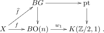
ونعلم أيضا أن الزمرة المتعامدة الخاصة SO(n) لها زمر الهوموتوبي نفسها التي لـG، ولذلك يمكننا اعتبار مركبة الهوية المتصلة SO(n) من O(n) الغلاف 0-المتصل G. ويستمر النمط إلى زمرة سبين وما بعدها، كما في [30].بعد ذلك، لننظر في موضوعنا الرئيس، وهو الزمرة المتعامدة غير محددة الإشارة O(p,q). ولهذه زمرة جزئية متراصة عظمى O(p) ×O(q). والاحتواء SO(p) ×SO(q)SO(p,q) تكافؤ هوموتوبي بفضل تفكيك كارتان لزمر لي غير المتراصة، أي التماثل الطوبولوجي من SO(p,q) →SO(p) ×SO(q) ×ℝpq.
وبهذه الملاحظة يمكننا اختزال مسألة الأغلفة المتصلة في سياق الإشارة غير المحددة هذا أساسا إلى نسختين من المسألة في حالة الإشارة المحددة. ومن نتائج القسم السابق، يمكننا سحب w1 ×w1 : BO(p) ×BO(q) →K(ℤ∕2,1) ×K(ℤ∕2,1) إلى الخلف للحصول على الغلاف 0-المتصل G:
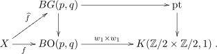
لدينا G(p,q) ≃SO(p) ×SO(q) وهذا مكافئ هوموتوبيا لمركبة الهوية SO(p,q)0 في SO(p,q)، ولذلك يمكننا أيضا أخذ G = SO(p,q)0 والدلالة عليه بـ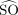
(p,q) اتساقا في الترميز. لاحظ أن SO(1) ≃pt و(1,n) ≃SO(n)، ولذلك لا نحتاج إلى النظر في حالة n = 1 عند قتل زمر الهوموتوبي الأعلى الخاصة بها.ومن ناحية أخرى، لدينا ما يلي.
تعريف 3.1 الغطاء الملتوي، ويرمز إليه بـ
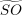
(p,q)، هو السحب الخلفي: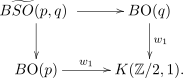
3.2 زمر سبين غير محددة الإشارة
تؤدي الخطوة التالية في الانتقال من SO(n) إلى Spin(n)، بأخذ غطاء مزدوج أو بقتل الزمرة الأساسية، إلى التشاكل لاحظ التشاكلات المفيدة الآتية في الدرجات المنخفضة: Spin(2)U(1), Spin(3)SU(2), Spin(5) Sp(2)، وSpin(6)SU(4).
ننظر بعد ذلك في الزمرة المتعامدة غير محددة الإشارة SO(p,q) ونقتل زمرة الهوموتوبي الأولى π1. وهنا توجد حالتان، بحسب ما إذا كان أحد العاملين p أو q أكبر من 1. ولذلك نود قتل الزمرة الأساسية إما لـ SO(1,n) ≃O(n)⟨1⟩≃SO(n) أو لـSO(p,q) ≃O(p,q)⟨1⟩من أجل p,q ≥2. والفرق المهم عن الحالة المحددة هو أن الزمرة الجزئية المتراصة العظمى لـSO(p,q) هي SO(p) ×SO(q)، مما يشير إلى أن الاتصال يتضمن أكثر من مجرد ℤ∕2 المعتادة.
ملاحظة 4 (i). تعرف الزمرة Spin(p,q) بأنها الغطاء المزدوج لـ SO(p,q) بطريقة غير تافهة قليلا، أي الغطاء الموافق لـ ℤ∕2 القطري داخل ℤ∕2 ×ℤ∕2. ويتكون هذا ℤ∕2 القطري من زوج من العناصر، حيث يقابل الأول نواة Spin(p) → SO(p) والثاني يقابل Spin(q) → SO(q). على سبيل المثال، Spin (2,2)SL(2,ℝ) ×SL(2,ℝ). انظر [45] [2] [18] [37] [38].
(ii). شرط الحصول على بنية Spin(p,q) انطلاقا من بنية SO(p,q) هو الانعدام المنفصل لصنفي شتيفل-ويتني الثانيين w2i وi = 1,2 (انظر [33] للتفاصيل).
عقلانيا، تعطى حلقة كوهومولوجيا الزمرة المتعامدة الخاصة كما يلي
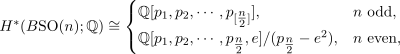
حيث إن pi هي أصناف بونترياغن في الدرجة 4i وe هو صنف أويلر في الدرجة n. والنتيجة في الحالة الفردية هي ما يتوقعه المرء، بينما تقدم الحالة الزوجية مولدا جديدا. وعند النظر في الحالة الصحيحة يبقى هذا المولد، وبالإضافة إلى ذلك سنحصل على مولدات أخرى تنشأ من رفوع صحيحة لأصناف شتيفل-ويتني، أي تنشأ من تطبيق بوكشتاين على أحاديات الحد في أصناف شتيفل-ويتني الزوجية. وبما أننا مهتمون بمولدات الدرجة الرابعة، فإن الأخيرة لن تكون ذات صلة بنا.نعلم أن H2(BSO(n);ℤ∕2)ℤ∕2 مع صنف شتيفل-ويتني الثاني w2 مولدا له. ومن أجل n = 2، فإن الكوهومولوجيا الصحيحة لـBSO(2) مماثلة لـℤ ذات مولد وحيد 3
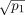
بحيث = p1 ∈H4(BSO(2);ℤ) بنتيجة براون عن حلقة الكوهومولوجيا الصحيحة لـBSO(n) [5]. وعموما، في الكوهومولوجيا الصحيحة لـ BSO(n) يكون مربع e2 لصنف أويلر هو نفسه صنف بونترياغن في الدرجة 4n. لذلك من أجل n = 1، لدينا مولد في الدرجة 2 معطى بـe = . ويمكن أيضا النظر إلى هذا على أنه صنف تشيرن أول إذا عرف المرء SO(2) مع U(1) ومن ثم BSO(n) مع ℂP∞، الذي تعطى كوهومولوجياه كما يلي H∗(ℂP∞;ℤ)ℤ[x]، مع |x|= 2.لذلك نحصل، بأخذ السحوبات الخلفية، على غلاف 1-متصل G(n) لـSO(n) من أجل n ≥3، وعلى G(2) لـ SO (2)، على التوالي:
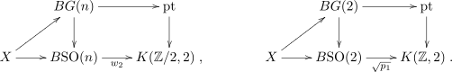
نعلم أن زمرة سبين Spin(n) مكافئة هوموتوبيا لـG(n) من أجل n ≥3. غير أن Spin(2) وG(2) لا يتفقان لأن Spin(2)S1 ليست بسيطة الاتصال.تعريف 3.2 تسمى زمرة سبين الهوموتوبية (المحددة)، ويرمز إليها بـ
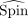
(n)، الغلاف 1-المتصل لـSO(n) لكل n ≥2 بحيث (n) ≃Spin(n) و(2) ≃G(2).وفي الواقع، فيما يتعلق بقتل زمر الهوموتوبي الأعلى، فإن G(2) تافهة ولا نحتاج إلى النظر في الحالة ذات n = 2 في العملية.
بعد ذلك، ومن أجل قتل π1 الخاصة بـSO(p,q)، ننظر في ثلاث حالات: عندما p = q = 2، وعندما يكون أحد p أو q مساويا لـ2، وعندما يكون كل من p وq أكبر من 2.
تعريف 3.3 ستكون زمر سبين في الحالات الثلاث أعلاه هي السحوبات الخلفية في المخططات الآتية من أجل p,q ≥3:
لتبرير ذلك، نحتاج إلى النظر في زمر الكوهومولوجيا. ولهذا نحتاج أولا إلى بعض الحسابات.
لمّة 3.4 يبين الجدول الآتي زمر الهومولوجيا ذات المعاملات الصحيحة$H_k(BSO(n);Z)k=0,12:
| n = 1 | n = 2 | n ≥3 | |
| H0 | ℤ | ℤ | ℤ |
| H1 | 0 | 0 | 0 |
| H2 | 0 | ℤ | ℤ∕2 |
البرهان. SO(1){1}ولذلك لهذه الحالة هومولوجيا تافهة في الدرجات غير الصفرية. وبما أن SO (2)S1، فإن لدينا BSO(2)ℂP∞. نعلم أن
ولذلك، باستعمال النهاية المباشرة Hk(ℂP∞;ℤ) = nHk(ℂPn;ℤ)، نحصل على
ومن أجل n ≥3، نعلم أن
ومن ثم فإن Hk(BSO(n);ℤ) يتبع من مبرهنة هوريفيتس. □
ولكي لا نقلق بشأن زمر الهوموتوبي في الدرجة صفر، نعمل مع (p,q)، وهو الغلاف المتصل لـSO(p,q).
البرهان. من أجل أي عددين صحيحين موجبين p وq، تعطي صيغة كونيث
| H2(BSO(p) ×BSO(q);ℤ) | hom(H2(BSO(p) ×BSO(q);ℤ),ℤ) | ||
| ⊕Extℤ1(H 1(BSO(p) ×BSO(q);ℤ),ℤ) . |
والآن تحسب زمر الهومولوجيا داخل عاملي hom وExt في الطرف الأيمن كما يلي
| H2( | BSO(p) ×BSO(q);ℤ)(⊕ r+s=2Hr(BSO(p);ℤ) ⊗ℤHs(BSO(q);ℤ)) | ||
| ⊕(⊕ r+s=1Tor1ℤ(H r(BSO(p);ℤ),Hs(BSO(q);ℤ))) | |||
و
| H1(BSO(p) ×BSO(q);ℤ) | (⊕ r+s=1Hr(BSO(p);ℤ) ⊗ℤHs(BSO(q);ℤ)) | ||
| ⊕(⊕ r+s=0Tor1ℤ(H r(BSO(p);ℤ),Hs(BSO(q);ℤ))) | |||
| = 0 , |
لأن H1(BSO(n);ℤ) تافه من اللمة 3.4.
□
3.3 زمر سترينغ غير محددة الإشارة
في هذا القسم نتخذ زمرة سبين غير محددة الإشارة Spin(p,q) نقطة انطلاق لنا. ونؤكد أن هناك دقة هنا، وهي أن هذه الزمرة ليست بسيطة الاتصال من أجل p وq عامين. ففي الواقع، الزمرة الجزئية المتراصة العظمى لـSpin(p,q) هي Spin(p) ×Spin(q)∕{(1,1),(−1,−1)}. والزمرة Spin (p,q) نفسها هي الغطاء القطري 2-الطية للغطاء 4-الطية لـSO(p,q). ومن أجل p ≥q، تعطى الزمرة الأساسية كما يلي ومن أجل تعريف بنية سترينغ غير محددة الإشارة تعريفا سليما، نحتاج إلى اتخاذ زمرة بسيطة الاتصال نقطة انطلاق. ولذلك ينبغي أن نبدأ من الغطاء بسيط الاتصال لـSpin(p,q)، وهذا ما نفعله أدناه. لاحظ مع ذلك أنه يمكن تعريف متغيرات لبنى سترينغ من دون اشتراط ذلك. والبنية الناتجة ستكون نظيرة لحالة بنى p1 (انظر [27] [28] من أجل بنى نظيرة متنوعة في الحالة المحددة).
بعد ذلك نقتل زمر الهوموتوبي التالية غير التافهة، وهي π3، لزمرة سبين المعنية Spin(p,q). لاحظ أنه في هذه المرحلة إذا كان أحد p أو q أقل من 3، فإن العامل الموافق في التفكيك Spin(p) ×Spin(q) لن يظهر في العملية. لذلك سننظر أساسا في حالتين: Spin(n) ≃(1,n) ≃(2,n) ≃O(n)⟨3⟩ و(p,q) ≃O(p,q)⟨3⟩من أجل p,q ≥3.
عندما p,q ≥3، تكون الزمرة الجزئية المتراصة العظمى للغلاف 1-المتصل O(p,q)⟨1⟩هي O(p)⟨1⟩×O(q)⟨1⟩، وهي مكافئة هوموتوبيا لـ Spin(p) ×Spin(q). ومن ثم فإن O(p,q)⟨1⟩مكافئ هوموتوبيا لـSpin(p) ×Spin(q). وفي الواقع، بما أن O(1)⟨1⟩وO(2)⟨1⟩مجرد فضاء نقطي وفضاء قابل للانكماش على التوالي، فلا يزال بإمكاننا القول إن O(p,q)⟨1⟩مكافئ هوموتوبيا لـ O(p)⟨1⟩×O(q)⟨1⟩.
نود بعد ذلك النظر في الكوهومولوجيا. وهنا تكون زمر وحلقات الكوهومولوجيا للزمر المتعامدة وزمر سبين في المجال غير المستقر دقيقة جدا [5] [8] [17] [3]. غير أننا لن نحتاج إلا إلى زمرة الدرجة الرابعة. وفي الواقع، بين ماكلوغلين [21] أن زمرة الكوهومولوجيا الرابعة هي H4(BSpin(n);ℤ)ℤ ويولدها p1. لاحظ أن ذلك يمكن أيضا استنتاجه بوسائل أخرى، مثلا من الحسابات التي قدمها كونو [17] وبنسن وود [3].
نعود الآن إلى إنشاء بنى سترينغ غير محددة الإشارة. نحصل على غلاف 3-متصل G(n) من أجل n ≥ 3 بأخذ سحوبات خلفية هوموتوبية، مع التمييز بين حالتين: هنا، الخريطة (p1,p1) : BSpin(4) →K(ℤ ×ℤ,4) تكافئ الخريطة p1 ×p1 : BSpin(3) ×BSpin(3) →K(ℤ ×ℤ,4) من خلال التشاكل العرضي Spin(4)Spin(3) ×Spin(3). وبناء على ذلك، يمكن تفكيك أي خريطة تصنيف 4 f : X →B(3,3) إلى زوج f = (f1,f2) مع f1,f2 : BSpin(3) →K(ℤ,4). تذكر أيضا أن أي خريطة تصنيف f : X →B(p,q) يمكن تفكيكها إلى (f1,f2) : X →B(p) ×B(q)، بسبب التكافؤ الهوموتوبي لفضاءات الهدف. ومن ثم يمكننا استعمال الترميزين الجمعي والضربي بالتبادل.
ومن أجل قتل π3 لـ(p,q)، نأخذ السحوبات الخلفية وفق الإجراء الآتي.
تعريف 3.6 تعرف زمر سترينغ في الحالة غير المحددة بوصفها فضاءات الحلقات لفضاءات التصنيف الموافقة، التي تعرف بدورها عبر السحوبات الخلفية الآتية:
(i) من أجل p,q ≥ 5 (ii) من أجل p = 4,q ≥5، (iii) ومن أجل p = q = 4,
لاحظ أننا نستطيع أيضا النظر في متغيرات لبنى سترينغ مرتبطة بالزمر غير بسيطة الاتصال Spin (p,q).
تعريف 3.7 بنية (p1,p1′) هي رفع من BSpin(p,q) إلى فضاء التصنيف المحصل عليه بقتل زمرة الهوموتوبي الرابعة.
وهذه نظائر لبنية p1، حيث لا تكون زمر الهوموتوبي الدنيا مقتولة بالضرورة. انظر [27] [28] [29] من أجل التوسيعات والتطبيقات.
وبالطبع، نحتاج إلى إثبات تفكيك زمر الكوهومولوجيا الموافقة. وهذا بدوره سيتطلب أخذ تشاكلات مع الهومولوجيا. ولهذا الغرض نبدأ بما يلي:
لمّة 3.8
البرهان. تعطي صيغة كونيث للهومولوجيا الهوية الآتية:
| H4(BSpin(p) ×BSpin(q) | ;ℤ)⊕ r+s=4Hr(BSpin(p);ℤ) ⊗ℤHs(BSpin(q);ℤ) | ||
| ⊕⊕ r+s=3Tor1ℤ(H r(BSpin(p);ℤ),Hs(BSpin(q);ℤ)). |
بما أن Hs(BSpin(q);ℤ) = 0 من أجل s = 1,2,3، فإن الحد غير التافه الوحيد في Tor هو
وهذا أيضا تافه من أجل p ≥2. وعلاوة على ذلك، عندما p = 1، لدينا Tor1ℤ(ℤ∕2,ℤ)، وهذا تافه لأن ℤ خال من الالتواء.
وحد الجمع المباشر في الطرف الأيمن من صيغة كونيث أعلاه لا يملك إلا عاملين غير تافهين: H0(BSpin(p);ℤ) ⊗H4(BSpin(q);ℤ) وH4(BSpin(p);ℤ) ⊗H0(BSpin(q);ℤ). وعندما p ≥2، فإن هذين الاثنين مماثلان لـℤ ⊕ℤℤ. في هذه المرحلة تبدو هناك عدة مسارات ممكنة. لدينا التشاكلات
| H0(BSpin(p);ℤ) ⊗H4(BSpin(q);ℤ) | H4(BSpin(q);ℤ), | ||
| H4(BSpin(p);ℤ) ⊗H0(BSpin(q);ℤ) | H4(BSpin(p);ℤ). |
ومن ناحية أخرى، عندما p = 1، لدينا H4(BSpin(1);ℤ) = 0. لذلك فالحد الوحيد غير التافه الآن هو
H0(BSpin(p);ℤ) ⊗H4(BSpin(q);ℤ)H4(BSpin(q);ℤ). □
سنحتاج أيضا إلى حساب حد Ext.
لمّة 3.9
البرهان. أولا، نحتاج إلى حساب H3(BSpin(p) ×BSpin(q);ℤ) ونستعمل صيغة كونيث:
| H3(BSpin(p) ×BSpin(q); | ℤ)⊕ r+s=3Hr(BSpin(p);ℤ) ⊗ℤHs(BSpin(q);ℤ) | ||
| ⊕⊕ r+s=2Tor1ℤ(H r(BSpin(p);ℤ),Hs(BSpin(q);ℤ)). |
حد Tor تافه لأن Hs(BSpin(q);ℤ) = 0 أو ℤ، وℤ خال من الالتواء. العامل الوحيد غير التافه في
الحد الأول في الطرف الأيمن هو H3(BSpin(p);ℤ) ⊗H0(BSpin(q);ℤ). وهذا صفر من أجل p ≥2 لأن
H3(BSpin(p);ℤ) = 0. ومن ناحية أخرى، إذا كان p = 1، فلدينا H3(BSpin(1);ℤ) = ℤ∕2 وتتبع النتيجة
من العلاقة ℤ∕2 ⊗ℤℤ∕2. □
نحن الآن مستعدون لحساب زمر الكوهومولوجيا في الدرجة الرابعة.
البرهان. تنص صيغة كونيث للكوهومولوجيا على أن
| H4(BSpin(p) ×BSpin(q);ℤ) | hom(H4(BSpin(p) ×BSpin(q);ℤ),ℤ) | ||
| ⊕Extℤ1(H 3(BSpin(p) ×BSpin(q);ℤ),ℤ) . |
عندما p = 1، نحصل من اللمم أعلاه على
| H4(BSpin(1) ×BSpin(q);ℤ) | hom(H4(BSpin(q);ℤ) ⊕ℤ∕2 | ||
| H4(BSpin(1);ℤ) ×H4(BSpin(q);ℤ) . |
وهنا استعملنا حقيقة أن الجداءات المنتهية والجداءات المشتركة المنتهية تتطابق في الفئة الجمعية. وعندما p ≥2، يكون لدينا
| H4(BSpin(p) ×BSpin(q);ℤ) | hom(H4(BSpin(p);ℤ) ⊕H4(BSpin(q);ℤ),ℤ) | ||
| hom(H4(BSpin(p);ℤ),ℤ) ×hom(H4(BSpin(q);ℤ),ℤ) | |||
| H4(BSpin(p);ℤ) ×H4(BSpin(q);ℤ) . |
ومن أجل p = 2، لدينا H4(BSpin(2);ℤ)H4(ℂP∞;ℤ)ℤ، ولذلك H4(BSpin(2);ℤ)ℤ.
الزمرة الجزئية المتراصة العظمى لـG = Spin(p,q) هي K = Spin(p) ×Spin(q)∕(ℤ∕2). لذلك فإن G وK متكافئان هوموتوبيا ضعيفا، ومن ثم فهما في الواقع متكافئان هوموتوبيا، لأن الكوهومولوجيا المعتادة ممثلة بفضاءات أيلنبرغ-ماك لين بمعنى أن Hn(X;A)[X,K(A,n)]، حيث إن A زمرة معاملات (أو حلقة الأعداد الصحيحة) وX فضاء طوبولوجي اعتباطي. ومن المتتالية الدقيقة القصيرة الآتية
ومن حقيقة أن Hn(ℤ∕2;ℤ) = 0 لكل n، نحصل على التشاكل المطلوب H4(BSpin(p,q);ℤ)H4(BSpin(p)×BSpin(q);ℤ).
□
3.4 بنية سترينغ المرتبطة بالزمر الوحدوية والسيمبلكتية غير محددة الإشارة
الزمرة الوحدوية غير محددة الإشارة. ليدل U(p,q) على زمرة مصفوفات التشاكلات الخطية المحافظة على الطول للفضاء شبه الهرميتي ℂp,q ذي الإشارة p,q. والزمرة الوحدوية الخاصة غير محددة الإشارة SU(p,q) = U(p,q) ∩SL(p + q,ℂ) هي الزمرة الجزئية من U(p,q) المكونة من المصفوفات ذات المحدد 1.
يسرد الجدول الآتي زمر الهوموتوبي للزمرة الوحدوية [15] (انظر [20] [24] من أجل مولدات صريحة).
| U(1) | U(2) | U(3) | U(4) | U(5) | U(6) | |
| π1 | ℤ |
ℤ | ℤ | ℤ | ℤ | ℤ |
| π2 | 0 | 0 | 0 | 0 | 0 | 0 |
| π3 | 0 | ℤ |
ℤ | ℤ | ℤ | ℤ |
| π4 | 0 | ℤ∕2 | 0 | 0 | 0 | 0 |
| π5 | 0 | ℤ∕2 | ℤ |
ℤ | ℤ | ℤ |
| π6 | 0 | ℤ∕12 | ℤ∕6 | 0 | 0 | 0 |
| π7 | 0 | ℤ∕2 | 0 | ℤ |
ℤ | ℤ |
ملاحظة 5 (i) تقبل الزمرة الوحدوية غير محددة الإشارة تفكيك كارتان U(p,q)U(p) ×U(q) ×ℂpq، بحيث إنه – كما في حالة الزمرة المتعامدة – تحدد الكوهومولوجيا بالزمرة الجزئية المتراصة العظمى K = U(p) ×U(q). وهذا يؤدي إلى صنفي كوهومولوجيا، واحد من كل عامل في K، إلا عندما يكون p أو q مساويا لـ1، ففي تلك الحالة يوجد صنف واحد فقط في الدرجة الحقيقية الرابعة، وهو c2 للعامل المتمم غير التافه في U(1,q) أو U(p,1).
(ii) لكل الزمر الوحدوية زمرة أساسية غير تافهة، مماثلة لـ ℤ. ويرمز إلى زمرتي الغطاء الشامل للزمرة الوحدوية غير محددة الإشارة والزمرة الوحدوية الخاصة غير محددة الإشارة بـ(p,q) و (p,q), على التوالي. لاحظ أن الأخيرة زمرة جزئية من الأولى أيضا.
(iii) فيما يخص π3، فإن الزمر واقعة أصلا في المجال المستقر. وهذا يجعل النقاش أبسط بكثير منه في الحالة المتعامدة.
(iv) إن حلقات كوهومولوجيا فضاءات التصنيف للزمرة الوحدوية والزمرة الوحدوية الخاصة ذات المعاملات الصحيحة يولدها أصناف تشيرن ci في الدرجة 2i، ولها صورة أبسط بكثير من الحالة المتعامدة، أي
تدرس بنى سترينغ المرتبطة بالزمرة الوحدوية في إنشاءات مرتبطة بالكوهومولوجيا الإهليلجية، كما في [1]. وبالمثل، لدينا:
تعريف 3.11 تعرف بنية سترينغ على فضاء X ذي بنية وحدوية غير محددة الإشارة، أي مع خريطة f : X → B(p,q)، عبر مخطط الرفع الآتي إلى خريطة
(i) من أجل p,q ≥2

حيث إن c2,c2′: (E,E′)(c2(E),c2′(E′)) هي الممثلات في الدرجة 4 لكل من خرائط العوامل؛
(ii) من أجل p = 1
لأن B(1) ≃∗. وبالمثل من أجل q = 1 مع صنف c2 الموافق للعامل الأول.
والآتي مباشر من التعريف.
قضية 3.12 (i) تصنف بنى String(U(p,q)) وString(SU(p,q)) بزوج من الأصناف (c2,c2′)، حيث إن c2 وc2′ هما المولدان في الدرجة 4 لـBU(p) وBU(q)، على التوالي.
(ii) عندما يكون إما p = 1 أو q = 1، لا يكون لدينا إلا مولد واحد بوصفه عائقا لـString(U(p,q)).
الزمرة السيمبلكتية غير محددة الإشارة. الزمرة السيمبلكتية غير محددة الإشارة Sp(p,q)، المعروفة أيضا بالزمرة الوحدوية الكواترنيونية غير محددة الإشارة U(p,q;ℍ)، يمكن تعريفها بوصفها زمرة الإيزوميتريات لصيغة هرميتية كواترنيونية غير منحلّة في ℍn.
ملاحظة 6 (i) تقبل الزمرة السيمبلكتية غير محددة الإشارة تفكيك كارتان Sp(p,q)Sp(p) ×Sp(q) × ℍpq، بحيث إن الكوهومولوجيا تتحدد مرة أخرى بالزمرة الجزئية المتراصة العظمى K = Sp(p) ×Sp(q)، مما يؤدي إلى صنفي كوهومولوجيا. وعلاوة على ذلك، وبسبب البعد الكبير نسبيا، لا توجد حالات منحلّة هنا. فعلى سبيل المثال، Sp(1,1)Sp(1) ×Sp(1)S3 ×S3.
(ii) الزمرة السيمبلكتية بسيطة الاتصال، ولذلك لا توجد مسائل تتعلق بنقطة الانطلاق لتعريف بنية سترينغ موافقة.
(iii) يقع πi(Sp(n)) في المجال المستقر أصلا من أجل i ≤4n+1. ولذلك نكون في المجال المستقر لكل قيمة من n عند النظر في زمرة الهوموتوبي الثالثة. وقد حسب ميمورا وتودا زمر الهوموتوبي للزمر السيمبلكتية (انظر [22]).
(iv) إن حلقة كوهومولوجيا فضاء تصنيف الزمرة السيمبلكتية تولدها أصناف بونترياغن السيمبلكتية piℍ ذات الدرجة 4i،
(v) تحت التعريف Sp(1)SU(2)، يكون p1ℍ مساويا لـ−c2.
تعريف 3.13 تعرف بنية سترينغ للزمرة السيمبلكتية غير محددة الإشارة Sp(p,q) على فضاء X ذي خريطة تصنيف f : X →B(p,q) بوصفها الرفع في المخطط
حيث إن p1ℍ ×p1′ℍ : (E,E′)(p1ℍ(E),p1′ℍ(E′)) هي الممثلات في الدرجة 4 لكل من خرائط العوامل.
وكما في الحالة الوحدوية، يتبع مباشرة من التعريف أن لدينا ما يلي.
قضية 3.14 تصنف بنى سترينغ المرتبطة بالزمرة السيمبلكتية غير محددة الإشارة بزوج من أصناف بونترياغن السيمبلكتية (p1ℍ,p′1ℍ)، حيث إن الأول والثاني هما مولدا H4(BSp(p);ℤ) وH4(BSp(q);ℤ)، على التوالي.
3.5 الصلة بالبنى الملتوية
رأينا أن البنى غير المحددة تتحدد هوموتوبيا بزمرها الجزئية المتراصة العظمى، وهي جداءات لزمرتي لي متراصتين. والعائق الذي يصادفنا يتضمن صنفين مميزين، واحدا من كل زمرة من هاتين الزمرتين العاملتين. ومن الطبيعي عندئذ أن نبحث كيف يمكن أن تتفاعل “البنيتان المركبتان”. وهناك مثال آخر يتفاعل فيه زوج من البنى الكوهومولوجية في هذا السياق، هو البنى الملتوية ([41] [31] [27] [28] [29])، وهي ما نستكشف الآن صلات ممكنة به.
رأينا أن حزمة G-رئيسية f : X →BG ذات زمرة طوبولوجية G مكافئة هوموتوبيا لـG′×G′′يمكن رفعها إلى حزمة -رئيسية، حيث إن لها النمط الهوموتوبي نفسه الذي لـG إلا أن πn قتلت، وذلك عندما ينعدم صنفا العائق f1∗α′وf2∗α′′في Hn+1(X;πn(G′×G′′)). أي إن المربع الخارجي في المخطط الآتي يتبادل حتى الهوموتوبيا: بدلا من اشتراط انعدام العائقين f1∗α′وf2∗α′′في آن واحد، قد نرغب في إرخاء هذا الشرط إلى مجرد انعدام الفرق
افترض الآن أن الزمرتين G′وG′′لهما زمر الهوموتوبي نفسها في الدرجة n، أي إن لدينا πn(G′)πn(G′′). وبالدلالة على زمرة التشاكل هذه بـπn، نأخذ السحب الخلفي 0 كما في المخطط الآتي: افترض أن لـ := Ω0 بنية زمرة طوبولوجية. بمعطى f1 : X →BG′ وf2 : X →BG′′يصنفان حزما G′- وG′′-رئيسية فوق X، على التوالي، توجد حزمة -رئيسية شاملة فوق X إذا كان f1∗α′هوموتوبيا لـf2∗α′′، وهو ما يكافئ الشرط مخططيا، يكافئ الشرط أن نطلب وجود هوموتوبيا h كما هو مبين في المخطط: كل ذلك يحفز التعريف الآتي:
تعريف 3.15 افترض أن لدينا زمرتين طوبولوجيتين G′ وG′′ بزمر هوموتوبي πn′ := πn(G′) وπn′′ := πn(G′′) على التوالي. وعلاوة على ذلك، افترض أن لدينا صنفي كوهومولوجيا معطيين α′∈Hn+1(BG′;πn′) و α′′ ∈ Hn+1(BG′′;πn′′) وتشاكل زمر φ : πn′′ → πn′. عندئذ تكون لدينا زمرة الهوموتوبي كما في الحجة السابقة، ومن أجل بنيتين G′- و G′′- فوق X معطاتين بـf1 وf2، فإن بنية المستحثة فوق X يقال إنها ملتوية لصالح G′:
ملاحظة 7 للبناء الملتوي دوافع طبيعية ناشئة من الفيزياء، كما عرضها ساتي-شرايبر-ستاشيف [31]. فعلى سبيل المثال، شرط شذوذ غرين-شوارتز ([11] [10])
حيث إن ch2(E) هو مميز تشيرن الثاني لحزمة E الذي يختزل إلى صنف تشيرن الثاني c2(E)، يكافئ وجود هوموتوبيا H3 في المخطط الآتي، مع π3(SU(n))π3(Spin(n))ℤ من أجل n ≥3 ما عدا 4، وتظهر الهوموتوبيا H3 حقل B بوصفه جيرب ملتوية، والتواءه هو صنف الفرق p1(TX) −c2(E). ويمد تعريفنا أعلاه هذا إلى حالة الإشارة غير المحددة. وما لدينا في سياقنا الحالي يمكن النظر إليه أساسا كبنية سترينغ ملتوية، بمعنى [41] [31]، حيث ينشأ الالتواء نفسه من حزمة سبين، وحيث يكون الاثنان هما الجزآن في الزمرة الجزئية المتراصة العظمى المركبة لـSpin(p,q).
ملاحظة 8 لدينا حالتان فقط للنظر فيهما من أجل الأغلفة الملتوية:
وبالمثل للحالات السابقة، يمكننا بناء أغلفة ملتوية:
تعريف 3.16 تعرف زمر سترينغ غير محددة الإشارة ذات الغطاء الملتوي كما يلي
سيكون من المثير جدا توسيع التعريفات والإنشاءات التي قدمناها في هذه الورقة لبنى سترينغ لتشمل ‘نسخا شبه ريماننية’ من بنى فايفبراين [30] [31] وبنى ناينبراين [29]. وقد يتطلب ذلك حسابات كبيرة. ونعتقد أن من المفيد أيضا استكشاف تطبيقات هندسية على الجيربات وفضاءات الحلقات والنقل الموازي ونظريات تشيرن-سيمونز والإنشاءات المكدسية، على سبيل المثال لا الحصر. ونأمل أن نستكشف هذه الموضوعات في موضع آخر. لقد كان هدفنا الأولي الوصول إلى هذه الموضوعات مباشرة. غير أننا أدركنا أن مسائل تبدو مباشرة هي في الواقع أدق بكثير مما يبدو للوهلة الأولى، ولذلك نعتقد أن من الجدير معالجة تلك المسائل أولا في هذه الورقة لتوفير أساس متين يمكن الانطلاق منه لمتابعة إنشاءات أخرى.
شكر وتقدير
نود أن نشكر Domenico Fiorenza وCorbett Redden وJonathan Rosenberg وUrs Schreiber على نقاشات مفيدة جدا. وقد دعم بحث H. S. بمنحة NSF رقم PHY-1102218. ونحن ممتنون للمحكم المجهول على اقتراحات مفيدة جدا حسنت الورقة تحسينا جوهريا.
References
[1] M. Ando, M. J. Hopkins, and N. P. Strickland, Elliptic spectra, the Witten genus and the theorem of the cube, Invent. Math. 146 (2001), no. 3, 595–687.
[2] H. Baum, Spin-Strukturen und Dirac-Operatoren über pseudoriemannschen Mannigfaltigkeiten, B.G. Teubner. Leipzig, 1981.
[3] D. J. Benson and J. A. Wood, Integral invariants and cohomology of BSpin(n), Topology 34, no. 1, (1995), 13–28.
[4] A. Borel, Topics in the homology theory of fibre bundles, Lecture Notes in Mathematics 26, Springer-Verlag (1967).
[5] E. H. Brown, Jr., The cohomology of BSOn and BOn with integer coefficients, Proc. Amer. Math. Soc. 85, no. 2, (1982), 283–288.
[6] U. Bunke, String structures and trivialisations of a Pfaffian line bundle, Commun. Math. Phys. 307 (2011) 675, [arXiv:0909.0846] [math.KT].
[7] D. Fiorenza, H. Sati, and U. Schreiber, Multiple M5-branes, String 2-connections, and 7d nonabelian Chern-Simons theory, Adv. Theor. Math. Phys. 18 (2014), 1–93, [arXiv:1201.5277].
[8] M. Feshbach, The integral cohomology rings of the classifying spaces of O(n) and SO(n), Indiana Univ. Math. J. 32 (1983), no. 4, 511–516.
[9] D. Fiorenza, U. Schreiber, and J. Stasheff, Čech cocycles for differential characteristic classes: an ∞-Lie theoretic construction, Adv. Theor. Math. Phys. 16 (2012), no. 1, 149-250, [arXiv:1011.4735] [math.AT].
[10] D. S. Freed, Dirac charge quantization and generalized differential cohomology, in Surv. Differ. Geom. VII, 129–194, Int. Press, Somerville, MA, 2000, [arXiv:hep-th/0011220].
[11] M. B. Green and J. H. Schwarz, Anomaly cancellation in supersymmetric D = 10 gauge theory and superstring theory, Phys. Lett. B 149 (1984) 117-122.
[12] A. Hatcher, Algebraic Topology, Cambridge University Press, 2002.
[13] S.-T. Hu, Homotopy Theory, Academic Press, New York, 1959.
[14] R. M. Kane, The homology of Hopf spaces, North-Holland Publishing Co., Amsterdam, 1988.
[15] M. Kervaire, Some nonstable homotopy groups of Lie groups, Illinois J. Math. 4 (1960), 161–169.
[16] T. P. Killingback, Global anomalies, string theory and space-time topology, Class. Quant. Grav. 5 (1988) 1169–1186.
[17] A. Kono, On the integral cohomology of BSpin(n), J. Math. Kyoto Univ. 26-3 (1986) 333–337.
[18] H. B. Lawson, Jr. and M.-L. Michelsohn, Spin Geometry, Princeton University Press, Princeton, New Jersey, 1989.
[19] A. Lichnerowicz, Spineurs harmoniques, C. R. Acad. Sci. Paris 257 (1963), 7–9.
[20] A. T. Lundell, Concise tables of James numbers and some homotopy of classical Lie groups and associated homogeneous spaces, Lecture Notes in Math. 1509, 250–272, Springer, Berlin 1992.
[21] D. A. McLaughlin, Orientation and string structures on loop space, Pacific J. Math. 155 (1992), 143-156.
[22] M. Mimura and H. Toda, Topology of Lie Groups, I and II, Amer. Math. Soc., Providence, RI, (1991).
[23] Th. Nikolaus, C. Sachse, and C. Wockel, A smooth model for the string group, Int. Math. Res. Not. IMRN 16 (2013), 3678-3721.
[24] T. Püttmann and A. Rigas, Presentations of the first homotopy groups of the unitary groups, Comment. Math. Helv. 78 (2003), 648–662.
[25] D. Quillen, The mod 2 cohomology rings of extra special 2-groups and the spinor groups, Math. Ann., 194 (1971), 197–212.
[26] C. Redden, String structures and canonical three-forms, Pacific J. Math. 249 (2) (2011), 447–484, [arXiv:0912.2086] [math.DG].
[27] H. Sati, Twisted topological structures related to M-branes II: Twisted Wu and Wuc structures Int. J. Geom. Methods Mod. Phys. 09 (2012), 1250056, [arXiv:1109.4461].
[28] H. Sati, Framed M-branes, corners, and topological invariants, J. Math. Phys. 59 (2018), 062304, [arXiv:1310.1060] [hep-th].
[29] H. Sati, Ninebrane structures, Int. J. Geom. Methods Mod. Phys. 12 (2015) 1550041, [arXiv:1405.7686] [hep-th].
[30] H. Sati, U. Schreiber, and J. Stasheff, Fivebrane structures, Rev. Math. Phys. 21 (2009), 1197–1240, [arXiv:0805.0564] [math.AT].
[31] H. Sati, U. Schreiber, and J. Stasheff, Twisted differential string and fivebrane structures, Comm. Math. Phys. 315 (2012), no. 1, 169–213, [arXiv:0910.4001] [math.AT].
[32] H. Sati and M. Wheeler, Variations of rational higher tangential structures, J. Geom. Phys. 130 (2018), 229-248, [arXiv:1612.06983] [math.AT].
[33] H.-B. Shim, Indefinite string structures, Ph.D. thesis, University of Pittsburgh, 2013.
[34] S. Stolz, A conjecture concerning positive Ricci curvature and the Witten genus, Math. Ann. 304 (1996), no. 4, 785–800.
[35] S. Stolz and P. Teichner, What is an elliptic object?, in Topology, geometry and quantum field theory, 247–343, Cambridge Univ. Press, Cambridge, 2004.
[36] E. Thomas, On the cohomology groups of the classifying space for the stable spinor groups, Bol. Soc. Mat. Mexicana (2) 7 (1962) 57–69.
[37] A. Trautman, Double covers of pseudo-orthogonal groups, Clifford Analysis and Its Applications, eds. Brace et al., 377–388, Springer, Netherlands, 2001.
[38] V. V. Varlamov, Universal coverings of the orthogonal groups, Advances in Applied Clifford Algebras 14(1) (2004), 81–168.
[39] K. Waldorf, String connections and Chern-Simons theory, Trans. Amer. Math. Soc. 365 (2013), 4393–4432, [arXiv:0906.0117] [math.DG].
[40] K. Waldorf, String geometry vs. spin geometry on loop spaces, J. Geom. Phys. 97 (2015), 190-226, [arXiv:1403.5656] [math.DG].
[41] B.-L. Wang, Geometric cycles, index theory and twisted K-homology, J. Noncommut. Geom. 2 (2008), no. 4, 497–552.
[42] G. Whitehead, Fiber spaces and the Eilenberg homology groups, Proc. National Acad. Sciences 38, no. 5 (1952), 426–430.
[43] G. Whitehead, Elements of homotopy theory, Springer-Verlag, New York-Berlin, 1978.
[44] E. Witten, The index of the dirac operator in loop space, in Elliptic Curves and Modular Forms in Algebraic Topology, Lecture Notes in Mathematics 1326 (1988), 161–18.
[45] J. A. Wolf, Spaces of constant curvature, Publish or Perish, Inc. Berkeley, 1977.